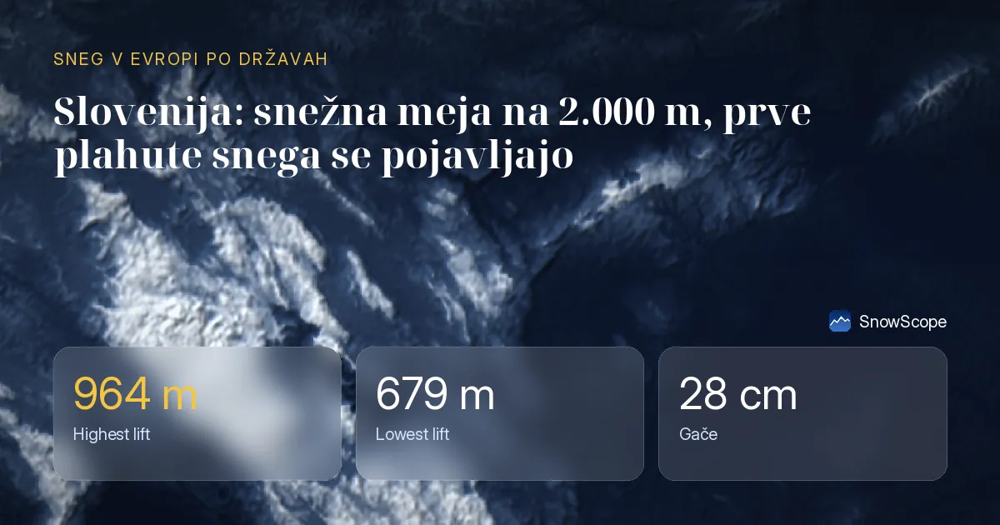

Slovenija: snežna meja na 2.000 m, prve plahute snega se pojavljajo
Sneg v Sloveniji leži čisto na eni nadmorski višini: nad 2.000 m so gore večinoma bele, spodaj pa so večinoma gole. Po tednu stalnega naraščanja se je snežna odeja včeraj ustavila, čeprav bo v četrtek prišlo do pomembnega vremena.
Oglejte si snežno napoved za Gače v aplikaciji SnowScopeVišina snega, opozorila in 3D zemljevid, brezplačno.
Kje je snežna meja
Ko se povzpnete po slovenskih gorah, naletite na oster prehod. Pod 2.000 m se sneg dotika tla le tu in tam—tudi med 1.500 m in 2.000 m, kjer bi pričakovali neprekinjeno pokritost, je snežna le le 35 odstotkov pobočja. Zrak je še vedno dovolj topel, da stopi, kar pada.
Tu je trenutno najboljša smuka. Julijskie Alpe, najvišji vrhovi v državi, so v zadnjih treh dneh nabirале 3 cm. Na nižjih nadmorskih višinah—1.000 m do 1.500 m—je sneg tanek in krhek, v povprečju le 1 cm. Tudi ta hitro izgine, ko se sonce ojača. Največji resorti, kot je Vogel na 1.731 m, imajo dovolj podlage za smuko, toda področja na nižjih nadmorskih višinah tekmujejo s jesensko toploto.
| Smučišče | Višina snega | Novi sneg, 72 h | Naslednji dnevi | Vrh |
|---|---|---|---|---|
| Gače | 28 cm | 0 cm | 0 cm | 964 m |
| Vogel | 26 cm | 1 cm | 0 cm | 1.731 m |
| Velika planina | 24 cm | 0 cm | 0 cm | 1.664 m |
| Rogla | 17 cm | 0 cm | 0 cm | 1.511 m |
| Golte | 16 cm | 0 cm | 0 cm | 1.570 m |

Pasovi nadmorske višine razloženi
Razdeliti po pasu nadmorske višine je zgodba jasna. Na 500 m do 1.000 m—u predgorjih—je le 12 odstotkov zemlje bele in povprečna globina je 1 cm. To ni uporaben sneg. Skočite na 1.000 m do 1.500 m in dobite 17 odstotkov pokritosti z isto tankima 1 cm povprečje.
Med 1.500 m in 2.000 m vidite prehodnico: pokritost naraste na 35 odstotkov in globina na 2 cm. Potem, nad 2.000 m, je zrak dovolj mrzel, da ohranja, kar pada. Tu je 74 odstotkov tal pokritih in globine dosegajo 6 cm. Če načrtujete smuko to sredo, ostanite visoko.
Skupna površina: teden hitrega naraščanja
Pred tednom je le 220 km2 Slovenije bilo bele barve. Danes je 1.130 km2 prekritih s snegom. To je preskok 910 km2 v sedmih dneh—dramatičen premik z golih pobočij na delno sneženo državo. Včeraj se je pokritost zmanjšala za 80 km2, prvi umik po stalnem nabiranju, verjetno zaradi dnevnega taljenja na južno obrnjenihpobočjih pod 2.000 m.
Skupno ima 15 od 27 slovenskih smučarskih resorjev zdaj merljiv sneg na tleh. To je polovica mreže in vsi ti resorti se nahajajo nad 1.000 m, kjer je bil včerajšnji upad skromen.
Kateri resorti vodijo
Gače, resort na nizki nadmorski višini 964 m, ima še vedno najglobljo podlago: 28 cm izmerjeno na postaji 16. novembra. To je dobro nad povprečjem za ta datum in kaže, koliko svežega snega je padlo tu zgodaj v tednu. Vogel, alpski resort na 1.731 m, zaostaja tik za tem z 26 cm in je nabiral 1 cm v zadnjih treh dneh. Velika planina na 1.664 m ima 24 cm.
Pod to stopnjo sta Rogla in Golte—oba nad 1.500 m—s tanjšimi podlagami 17 cm in 16 cm, narazen, in nista nabirala snega v zadnjih treh dneh. Razlika je višina in izpostavljenost. Najvišji vrhovi se še vedno nabirajo; resorti na srednji nadmorski višini izgubljajo maso zaradi taljenja. Prihodnji teden se bo ravnovesje morda spremenilo, ko bo sveža prah padla na visoke slemenove.
Kaj je naslednje
Četrtek 19. november je ključni datum. Če ta napoved držim, bo najbolj snežen dan prihodnjega tedna 19. november, skupno za prihodnji teden pa bi lahko doseglo 7 cm. Ta svež prah bo padel na obstoječe podlage in bi moral bistveno poglobiti sneg nad 2.000 m.
Naslednji teden, 24. do 30. novembra, je videti še bogatejši: napovedanih je do 33 cm. To je takrat, ko se zimski vzorec res začne oblikovati. Zaenkrat je četrtkova nevihta dogodek, ki ga je treba opazovati.
Kontekst: odličan začetek
V primerjavi s prejšnjimi novembri je to dobro čašovanje. Pri Gačah je običajna globina v sredini novembra nič; danes je 3 cm po isti meritvi. Pri Voglu je običajna globina enaka temu, kar vidimo zdaj. Pet od petih glavnih resorjev, ki jih sledimo, teče nad svojim novembrskim povprečjem, štiri od njih pa so nad povprečjem za razliko.
Sosednja Avstrija je tekla precej globlje—Avstrijski vodilni Kaprun ima 83 cm in mu sledi 50 cm več snega v naslednjem tednu. Italijanska Monterosa Ski drži 99 cm. Slovenija je za to stopnjo, toda trajektorija je jasna. To sredo ostanite visoko. Do konca novembra bi resorti na nižjih nadmorskih višinah morda postali spet uporabni, ko se sneg poglobi.
Nasveti za smučarje
- Ostanite nad 2.000 m to sredo. Tu je 74 odstotkov tal belo in globine dosegajo 6 cm. Nižje nadmorske višine so madežne in se tanjšajo dnevno zaradi taljenja.
- Pričakujte najboljšo smuko 19. novembra po prihodu glavnega snežnega pulza. Svež prah se bo nabieral največje na visokih slemenih in vrhovih.
- Bodite pozorni na tanko snežno pokritost nad skalo in ledom pod 1.500 m. Tudi povprečje 1 cm pomeni, da je veliko proge še vedno smeđe ali odprto. Progo testirajte previdno.
- Do konca novembra bo drugi vremenska sistem (24.–30. november) morda naredil nižje resorte uporabne. Če ste prožni, razmislite, da počakate nekaj dni namesto smuke zdaj po golih pobočjih.
- Preden greste s terensko smuko, preverite uraden plaz bulletin za Julijskie Alpe in visoke vrhove, še posebej po četrkovi sveži snegi.
About these numbers
Resort snow depths are the deepest snow on the resort's upper slopes on the date shown; they are estimates for an area, not a measurement at one point. Forecasts can change. Always read the official avalanche bulletin before going off-piste.
Cite this report
For research, teaching or the press: the numbers and charts are free to reuse under CC BY 4.0 with this citation.
SnowScope (2026), Slovenija: snežna meja na 2.000 m, prve plahute snega se pojavljajo, https://snowscope.app/blog/sl/2026/11/slovenia-snow-report-16-november-2026.html, accessed 2026-11-16
SnowScope (Atlas Labs). (2026, November 16). Slovenija: snežna meja na 2.000 m, prve plahute snega se pojavljajo. SnowScope snow reports. https://snowscope.app/blog/sl/2026/11/slovenia-snow-report-16-november-2026.html
BibTeX
@misc{snowscope2026sloveniasnowreport16nove,
author = {{SnowScope (Atlas Labs)}},
title = {Slovenija: snežna meja na 2.000 m, prve plahute snega se pojavljajo},
year = {2026},
month = nov,
howpublished = {\url{https://snowscope.app/blog/sl/2026/11/slovenia-snow-report-16-november-2026.html}},
note = {Published 2026-11-16 20:42 UTC; accessed 2026-11-16}
}· CC BY 4.0 · Methods, data and tools →
Gače: snow and temperature by height, this winter vs last (tools) →
Follow Gače
Brezplačno: sporočilo, ko prihaja novi sneg, in napoved vsako jutro.